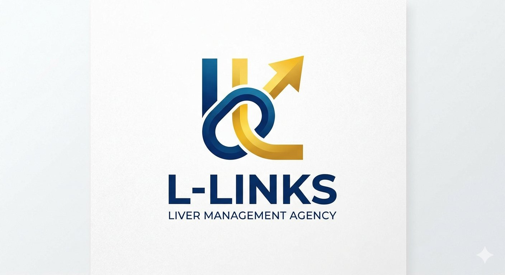

DeNA Creator Links
へのご紹介
ライブ配信に興味のある方や、すでに活動している方を、DeNA Creator Linksの公式プログラムへおつなぎします。
YOUR NEXT CHAPTER
ライブ配信を始めたい。
でも、最初の一歩がわからない。
そんなあなたと、一緒に考える窓口です。
DeNA Creator Links 公式パートナー事務所
あなたらしさを、そのままに。
01 / WHAT WE DO
「自分にできるかな」「どのアプリが合うんだろう」。
L-Linksは、配信への興味を具体的な一歩につなげる、
紹介と相談の窓口です。
ライブ配信に興味のある方や、すでに活動している方を、DeNA Creator Linksの公式プログラムへおつなぎします。
プラットフォームの選び方や、配信に関する疑問・不安をお聞きします。まだイメージが固まっていなくても、お気軽にどうぞ。
研修・コラボ企画・マネジメント・活動やトラブルへの専門的なサポートは、今後の展開を予定しています。現在の提供サービスではありません。
02 / FIRST STEP
相談するときは、こんなことから。
「配信に興味があります」の一言から。メールでもご相談いただけます。
興味のあるアプリや配信経験、聞いてみたいことを教えてください。
紹介についてのご希望や、活動を始める前に確認したいことを一緒に整理しましょう。

03 / ABOUT L-LINKS
L-Links（エル・リンクス）は、DeNA Creator Linksの公式パートナー事務所です。現在はライバー候補者の発掘・紹介を中心に活動しています。
これから配信を始める方も、すでに活動している方も。あなたの興味や想いを聞くところから、つながりを育んでいきます。
04 / QUESTIONS
はい。ライブ配信に興味がある方の相談を受け付けています。何から始めればよいか、気になることをお聞かせください。
Pococha・TikTok LIVEに対応しています。どちらがよいか迷っている方も、まずはご相談ください。
現在は、DeNA Creator Linksへの紹介と配信相談が中心です。専門的なマネジメントや研修などは今後の展開予定で、現在の提供内容とは異なります。
LINEでの相談は無料です。紹介後の活動条件や契約・費用に関することは、手続きの前に窓口でご確認ください。収益や成果を保証するものではありません。
LET’S CONNECT
うまく話そうとしなくても大丈夫。
まずは、あなたの気になることを聞かせてください。
LINE・メールなど、各サービスの画面へ移動します。
このサイト上で相談内容を送信するフォームはありません。